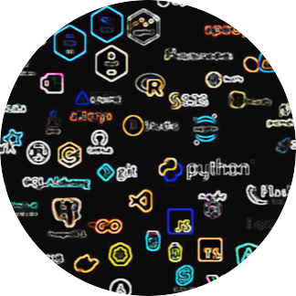
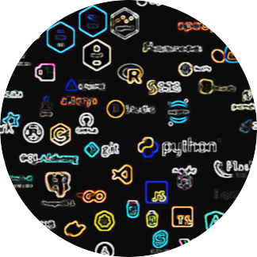

4. Mots-clés du langage#
Les mots-clés sont des termes réservés dans Python, destinés à structurer le langage et gérer les contrôles de flux et d’exécution. Ils ne peuvent pas être utilisés comme identifiants (noms de variables ou fonctions). La liste des mots-clés est disponible avec keyword.kwlist dans le module keyword.
Remarque
Python a évolué de manière significative entre la version 2.7 et la 3.x. Certains mots-clés ont été ajoutés, tandis que d’autres sont devenus obsolètes.
En Python 2.x., voici les mots-clés principaux :
and,as,assert,break,class,continue,def,del,elif,else,except,exec,finally,for,from,global,if,import,in,is,lambda,not,or,pass,raise,return,try,while,with,yield.
Avec Python 3.x., certains changements importants sont introduits; print et exec ne sont plus des mots-clés, mais des fonctions intégrées (builtins). True, False, None et nonlocal deviennent des mots-clés. True, False et None étaient présents auparavant mais modifiables (par exemple, True = 1). En Python 3, ces valeurs sont fixées et non modifiables.
async et await sont ajoutés en Python 3.5 pour supporter l’exécution asynchrone.
En resumé Python possède 35 mots-clés réservés qui définissent la structure et le flux de contrôle d’un programme.
|
|
|
|
|
|
|
|
|
|
|
|
|
|
|
|
|
|
|
|
|
|
|
|
|
|
|
|
|
|
|
|
|
|
Ces mots-clés ne peuvent pas être utilisés comme noms de variables, de fonctions ou de classes.
Catégorie |
Description et Exemples |
|---|---|
Contrôle de flux |
x = 10
if x > 0:
print("Positif")
elif x == 0:
print("Zéro")
else:
print("Négatif")
for i in range(5):
if i == 2:
continue
print(i) # Imprime 0, 1, 3, 4
|
Définition de fonctions |
def addition(a, b):
return a + b
|
Fonctions anonymes |
carré = lambda x: x * x
print(carré(4)) # Affiche 16
|
Gestion d’exceptions |
try:
x = 1 / 0
except ZeroDivisionError:
print("Erreur de division par zéro")
finally:
print("Opération terminée")
|
Classes et objets |
class Personne:
def __init__(self, nom):
self.nom = nom
def saluer(self):
return f"Bonjour, {self.nom}"
personne = Personne("Alice")
print(personne.saluer()) # Affiche "Bonjour, Alice"
|
Types spéciaux et gestion du contexte |
with open("fichier.txt", "r") as f:
contenu = f.read()
|
Programmation asynchrone |
import asyncio
async def main():
print("Bonjour")
await asyncio.sleep(1)
print("Monde")
asyncio.run(main()) # Exécute la fonction asynchrone
|
Opérateurs logiques et de comparaison |
a = [1, 2, 3]
b = a
print(a is b) # True car a et b pointent vers le même objet
print(2 in a) # True car 2 est dans la liste
|